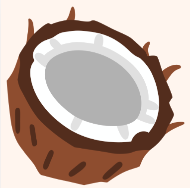
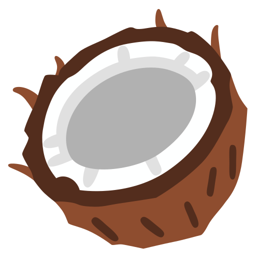
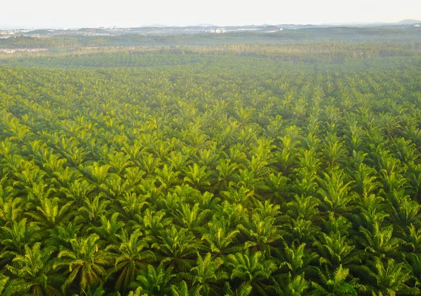
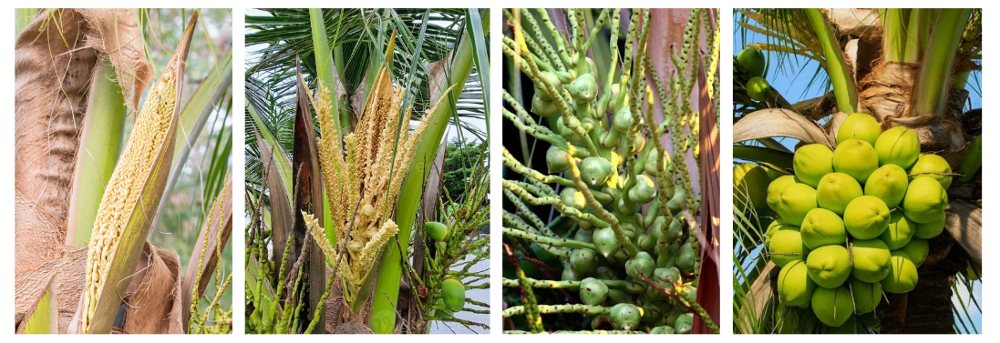
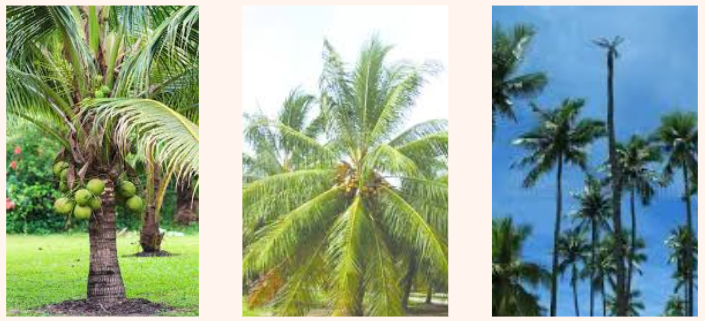
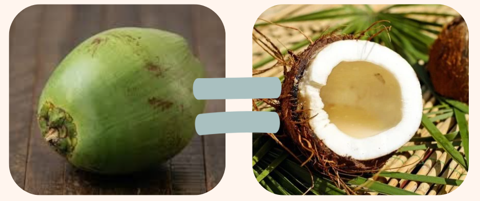

Tudo sobre Côco


Em contraste, o coqueiro gigante representa a força e a longevidade da espécie, podendo atingir até trinta metros de altura e viver por mais de seis décadas. Embora demore mais para começar a produzir, seus frutos são maiores e possuem uma polpa muito mais espessa e rica em óleos, o que o torna a escolha ideal para a produção de coco seco, leite de coco e derivados industriais. Sua robustez natural permite que ele sobreviva em condições mais severas de vento e falta de água, sendo a variedade mais comum nas paisagens litorâneas naturais.
Para unir as qualidades de ambos, surgiu o coqueiro híbrido, fruto do cruzamento entre o anão e o gigante. Esta variedade busca equilibrar a precocidade e o sabor da água do anão com a resistência e o alto rendimento de polpa do gigante. O resultado é uma planta de porte médio, altamente produtiva e versátil, que atende tanto ao mercado de água fresca quanto às indústrias de processamento. O híbrido é considerado o topo da eficiência produtiva, sendo a opção preferida para grandes projetos agrícolas que buscam alta rentabilidade em menos tempo.

Com o passar dos meses, o fruto amadurece e assume sua segunda identidade como côco seco. A casca torna-se marrom e rígida, enquanto a água diminui para dar lugar a uma polpa espessa, branca e muito nutritiva. Diferente de sua versão juvenil, o côco seco é uma fonte concentrada de energia e gorduras saudáveis, como o ácido láurico, que fortalece o sistema imunológico. Por ser extremamente rico em fibras, ele promove uma saciedade prolongada e auxilia diretamente no bom funcionamento do sistema digestivo(BENEFÍCIOS). Enquanto o côco verde nos oferece a leveza do líquido, o côco seco nos entrega a densidade de um alimento completo que serve de base para óleos, leites e farinhas, provando que a mesma fruta pode atender a necessidades completamente diferentes dependendo do seu momento de vida

| Umidade(%) | 43,0 |
| Energia(kcal) | 406 |
| Proteinas(g/100g) | 42,0 |
| Lipídeos(g/100g) | 10,4 |
| Carboidratos(g/100g) | 3,7 |
| Fibra Alimentar(g/100g) | 5,4 |